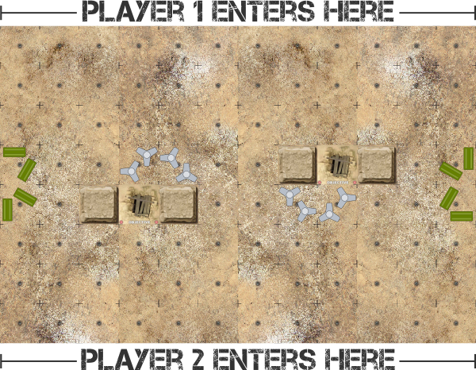

Objective tiles are shown on the map Desert Archeological Pit, but should only confer cover to Infantry Units occupying the space, and not the terrain special rules Follow Me as described in the Feb 2019 FAQ / ERRATA.
Capture Objectives
50 to 100 points
PLAYER 1: 100% | PLAYER 2: 100%
The player who controls the most Objectives wins.
A player controls Objectives by occupying the Square on or after Turn three, providing there are no enemy Units in any square adjacent to the Objective square.
In the case of a tie, the player with the most Victory Points wins, as calculated by totaling the point value of Units destroyed.
Players enter from indicated edges of the play area (long edges).
12x8 squares (in contrast to the typical 12x9) 